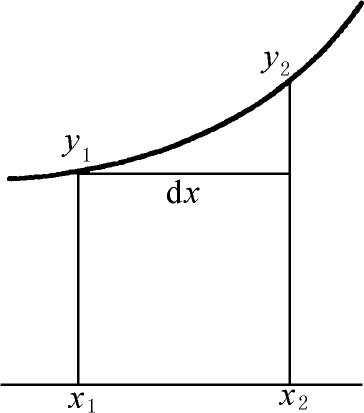

8．微积分的可靠性
从引进求速度、切线、最大值和最小值等新方法开始，它的证明就被攻击为是不可靠的。卡瓦列里的使用不可分量的最终元素以及他的论据震惊了那些重视逻辑严密性的人们。卡瓦列里答复他们的批评说，当代的几何学家在逻辑方面比他还随便——开普勒在他的《测量酒桶体积的新科学》中就是一例。他继续说，这些几何学家在面积计算中满足于模仿阿基米德的求直线的总和的方法，但没有能够给出像希腊人用来使工作严密的那种完整的证明。他们满足于他们的计算，只要结果有用就行了。卡瓦列里感到有理由采用同样的观点。他说，他的做法能引向新的创造，而且他的方法一点也没有强迫人们把一个几何结构看成是由无穷多部分组成的；除了在面积之间和体积之间建立正确的比之外，没有其他目的。但是这些比保持它们的意义和值，而不管人们对于连续统有什么见解。无论如何，卡瓦列里说：“严密是哲学所关心的，而不是几何所关心的事情。”
费马、帕斯卡和巴罗意识到他们在求和工作中的不严密性，但是相信照阿基米德的方式就能作出严密的证明。在《德东维尔的信》（1659）中，帕斯卡断言，无限小的几何与古希腊几何是一致的。他断言：“凡是能用不可分量的正确法则证明的东西，也能用古代的方式去严密地证明。”更进一步，他说不可分法必定会受到任何一个自称为几何学者的数学家的承认。它和古代的方法只是语言上的不同。然而，帕斯卡对于严密性也有矛盾心理。有时他辩护道，内心的干预给我们保证了数学步骤的正确性。为了做正确的工作所必需的东西是专门的“技巧”，而不是几何的逻辑，正如宗教对皈依的领会高于理智一样。在微积分中运用的几何的悖论，如同圣经中的明显的荒唐事一样，几何中的不可分量与有限量之间的关系同人类的公正与上帝的公正之间的关系是一样的。
卡瓦列里和帕斯卡提供的辩护适用于无穷小量的求和。关于导数，早期的作者如费马和罗贝瓦尔认为他们有一套简单的代数程序，这个程序有着非常明白的几何解释，因而能用几何的论据证明是合理的。实际上，当费马不能用穷竭法去核实他所提出的任何想法时，他谨慎地避免宣布一般性的定理。巴罗局限于几何论证，而且尽管他攻击代数学家缺乏严密性，可是对于他的几何论据的可靠性也是不够注意的。
牛顿和莱布尼茨都没有清楚地理解也没有严密地定义他们的基本概念。我们已经观察到他们在定义导数和微分时都是犹豫不定的。牛顿实际上是不相信他违背了希腊几何。虽然他使用了不合他口味的代数和坐标几何，但他认为归根到底他的方法不过是纯几何的自然延展。然而，莱布尼茨像笛卡儿一样，是一个思想开阔、很有远见的人，他看到了新思想有长远的潜力，而且毫不犹豫地宣告新科学出世了。因此对于微积分中严密性的缺乏不很担心。
对于他的思想的批评者，莱布尼茨作出各种不能令人满意的回答。他在1690年3月30日给沃利斯的信中(17)说：
考虑这样一种无穷小量将是有用的，当寻找它们的比时，不把它们当作是零，但是只要它们和无法相比的大量一起出现，就把它们舍弃。例如，如果我们有x＋dx，就把dx舍弃。但是如果我们求x＋dx和x之间的差，情况就不同了。类似地，我们不能把xdx和dxdx并列。因此如果我们微分xy，我们写下（x＋dx）（y＋dy）-xy＝xdy＋ydx＋dxdy。但dxdy是不可比较地小于xdy＋ydx，所以必须舍弃。这样就在任何特殊的情况下，误差都小于任何有限的量。
至于dy，dx和dy/dx的最终的含意，莱布尼茨仍然是含糊的。他说dx是两个无限接近的点的x值的差，切线是连接这样两点的直线。虽然他在各阶无穷小量之间确实作出了区别，但是他没有经过证明就扔掉高阶微分。有时候把无穷小量dx和dy描述成正在消失的或者刚出现的量，与已经形成的量相对应。这些无穷小量不是0，但小于任意有限的量。有时他求助于几何，说高阶微分和低阶微分相比，如同点和直线相比一样(18)，又说dx比x如同点比地球，或地球的半径比宇宙的半径一样。他认为两个无穷小量的比是不能指出的量之商或者是无限小的量之商，但是这个比仍然能用有限的量表示出，如同纵坐标对次切线的比那样。
暴风雨般的攻击和反驳开始于1694年和1695年荷兰物理学家和几何学家纽汶提（Bernard Nieuwentijdt，1654—1718）的书。虽然他承认，一般地说来，新方法引向正确的结果，但他批评方法的含糊，并指出有时方法引向荒谬。他抱怨说他无法理解无穷小量怎样和0有区别，并质问为什么无穷小量的和能是有限的量。他还质问高阶微分的意义和存在，质问在推理的过程中为何舍弃无穷小量。
在可能写于1695年的回答纽汶提的草稿中，以及在1695年的《教师学报》（Acta Eruditorum）的一篇文章中(19)，莱布尼茨作出了各种回答。他谈到“过分苛刻”的批评者，并说过分的审慎不应该使我们抛弃创造的成果。然后他说他的方法不同于阿基米德方法之处，只在于所用的表达方面，但他自己的方法更好地适应于发明的艺术。“无穷大”和“无穷小”仅仅表示愿要多大就多大和愿要多小就多小的量，这是为了证明误差可以小于任何指定的数——换句话说，就是没有误差。人们能用这些最终的东西——即无穷大量和无穷小量——作为一种工具，正如在代数里用虚根有极大的好处一样。
到这时为止，莱布尼茨的论据是他的微积分只用到通常的数学概念。但是因为不能使他的批评者满意，所以他说了一个叫做连续性定律的哲学原理，这个原理实际上和开普勒叙述的是一样的。1687年在给培尔（Pierre Bayle）的信中(20)，莱布尼茨叙述这个原理如下：“在任何假定的向任何终点的过渡中，允许制定一个普遍的推论，使最后的终点也可以包括进去。”为了支持这个原理，在1695年左右的没有发表的手稿中，作为例子，他给出一个把椭圆和抛物线包括在内的论证，虽然抛物线是椭圆的一个焦点移向无穷远时的极限情形。然后他运用这个原理为抛物线y＝x2/a计算dy/dx。在得到
dy∶dx＝（2x＋dx）∶a
之后，他说：“现在，因为按我们的公设，允许在一个普遍的道理下，也包括纵坐标x2y2越来越向确定的纵坐标x1y1移近并最终和它重合的情形（图17.21），所以明显地，在这种情形下，dx成为0，并且应该忽略……”莱布尼茨没有说明应该给予方程左边的dx以什么意义。

图17.21
他说，当然，绝对相等的东西总有一个绝对是无的差别，因此抛物线不是椭圆。
然而一个过渡的状态或者即将消失的状态是可以设想的，其中实际上仍然没有出现完全的相等或者静止……而是进入这样一种状态，即差小于任何指定的量，在这种状态中还剩余一些差、一些速度、一些角度，但它们每个都是无穷小……
是否这样一个从不等到相等的瞬时过渡……能够保持在严密的或者形而上学的意义中呢？或者无穷大的扩展顺次地越来越大，或者无穷小的扩展顺次地越来越小，这是否是合法的考虑呢？在目前，我承认这可能还是未解决的问题。
如果当我们说到无穷大（或者更严格些说，无限制的大）或者无穷小量（即在我们的知识中是最小的）时，就理解为我们意味着无限大的或者无限小的量（即要多大就多大，要多小就多小，使得任何人得到的误差可以小于某个指定的量），那就足够了。
在这些假定下，我们在1684年10月的《教师学报》中列出的算法的全部规则，都能够不很麻烦地给以证明。
然后莱布尼茨重新给出这些规则。他引进量（d）y和（d）x，并用它们完成通常的微分手续。他叫这些量是能指定的或者有限的没有消失的量。在得到最后的结果之后，他说，我们能够用消失的或不能指定的量dy和dx代替（d）y和（d）x，因为我们“假定消失量dy和dx的比等于（d）y和（d）x的比，而这个假定永远能归结到一个不容怀疑的真理。”
莱布尼茨的连续性原理确实不是今天的一个数学公理，但是他强调它，而且后来它成为重要的东西。他给出许多和这个原理相符的论据。例如在给沃利斯的信中(21)，莱布尼茨为他使用一个没有量的形式的特征三角形，即量缩小为0之后，特征三角形的形式仍然保存作辩护，而且挑战地反问道：“谁不承认没有量的形式呢？”同样的，在给格朗迪（Guido Grandi）的信中(22)，他说无穷小不是简单的、绝对的零，而是相对的零，这就是说，它是一个消失的量，但仍保持着它那正在消失的特征。然而，莱布尼茨在另外的时候又说，他不相信度量中真正的无穷大或者真正的无穷小。
莱布尼茨对于他的一套做法是否正确的最终验证比牛顿更少关心，认为这应取决于做法的有效性。他强调他所创造的东西在做法上或算法上的价值。在某种程度上，他确信只要他清楚地表述并且恰当地运用他的运算法则，就会获得合理而正确的结果，而不管所用符号的意义怎样可疑。
很明显，牛顿和莱布尼茨都没有把微积分的基本概念——导数和积分——弄清楚，更不用说弄精确了。他们不能正确地掌握这些概念，而是依靠成果的彼此一致和方法的多产，没有严密性地向前推进。
有几个例子可以说明即使在牛顿和莱布尼茨的卓越的最接近的继承者那里也缺乏明晰性。约翰·伯努利在1691年和1692年写出第一本微积分教材。积分部分于1742年出版(23)；微分部分《微分学》（Die Differentialrechnung），直到1924年才出版。但是洛必达（Marquis de l'Hospital）以他自己的名义在1696年出版了一个略加修改的法文译本（前已提到过）。约翰·伯努利以三条公设开始《微分学》。第一条说：“一个量增加或减少一个无穷小量之后，它既没有增加也没有减少。”第二条公设是：“每一条曲线是由本身是无穷小的无数条直线组成的。”在推理中他追随莱布尼茨，用了无穷小量。例如，为了从y＝x2得到dy，他用e代替dx并得到（x＋e）2-x2即2xe＋e2，然后只须去掉e2。像莱布尼茨一样，他用了含糊的比拟说明微分是什么东西。他说，因此无穷大量像是天文距离，而无穷小量像是显微镜揭示出来的微生物。1698年他辩论无穷小量必定存在(24)。为此，只要考虑无穷数列1，1/2，1/4，…就行了。如取10项，1/10就存在；如取100项，1/100就存在。相应地取无穷多个项，那就是无穷小量了。
包括沃利斯和约翰·伯努利在内的很少的几个人，试着定义无穷小是∞的倒数，他们认为∞是明确的数。还有其他一些人似乎认为，不可理解的东西不需要进一步解释。对于17世纪的大多数人来说，严密不是一件关心的事情。他们经常说的能够用阿基米德方法严密化的东西实际上不能够用阿基米德式的严密化，对于微分特别是这样，因为在古希腊数学中没有类似于微分的东西。
实际上，新的微积分正在引进与先前的工作根本不同的概念和方法。经过牛顿和莱布尼茨的工作，微积分成为一门完全新的要求有它自己的基础的学科。虽然他们没有完全意识到这一点，但是数学家们已经同过去决裂了。
正确的新概念的萌芽甚至能在17世纪的文献中发现。沃利斯在《无穷的算术》（1655）中，提出了函数的极限的算术概念：它是被函数逼近的数，使得这个数和函数之间的差能够小于任一指定的数，并且当过程无限地继续下去，差最终将消失。他的话是不严密的，但却包含了正确的思想。
詹姆斯·格雷戈里在他的《论圆和双曲线的求积》（1667）中明白指出，求面积、体积和曲线长度的方法，包含一个新的过程，即极限过程。他又说，这种运算同加、减、乘、除以及开方等五种代数运算的性质不同。他把穷竭法表示为代数的形式，并看出用外切于已知面积或体积的直线形与用内接直线形得到的逐次逼近值都收敛到相同的“最后项”。他还注意到极限过程产生不是有理数的根的无理数。但是沃利斯和詹姆斯·格雷戈里的见解在他们的世纪中没有引起注意。
微积分的基础仍然是不清楚的。更加混乱的是，牛顿的支持者继续谈论最初比和最后比，而莱布尼茨的追随者使用无穷小的非零量。许多英国数学家也许是由于基本上仍然为古希腊的几何所束缚，因而怀疑微积分的全部工作。这个世纪就这样在微积分处于混乱状态之下结束了。
参考书目
Armitage，A．：Edmond Halley，Thomas Nelson and Sons，1966．
Auger，L．：Un Savant méconnu：Gilles Persone de Roberval（1602-1675），A．Blanchard，1962．
Ball，W．W．R．：A Short Account of the History of Mathematics，Dover（reprint），1960，pp．309-370．
Baron，Margaret E．：The Origins of the Infinitesimal Calculus，Pergamon Press，1969．
Bell，Arthur E．：Newtonian Science，Edward Arnold，1961．
Boyer，Carl B．：The Concepts of the Calculus，Dover（reprint），1949．
Boyer，Carl B．：A History of Mathematics，John Wiley and Sons，1968，Chaps．18 19．
Brewster，David：Memoirs of the Life，Writings and Discoveries of Sir Isaac Newton，2 vols．，1855，Johnson Reprint Corp．，1965．
Cajori，Florian：A History of the Conceptions of Limits and Fluxions in Great Britain from Newton to Woodhouse，Open Court，1919．
Cajori，Florian：A History of Mathematics，Macmillan，1919，2nd ed．，pp．181-220．
Cantor，Moritz：Vorlesungen über Geschichte der Mathematik，2nd ed．，B．G．Teubner，1900 and 1898，Vol．2，pp．821-922；Vol．3，pp．150-316．
Child，J．M．：The Geometrical Lectures of Isaac Barrow，Open Court，1916．
Child，J．M．：The Early Mathematical Manuscripts of Leibniz，Open Court，1920．
Cohen，I．B．：Isaac Newton's Papers and Letters on Natural Philosophy，Harvard University Press，1958．
Coolidge，Julian L．：The Mathematics of Great Amateurs，Dover（reprint），1963，Chaps．7，11，and 12．
De Morgan，Augustus：Essays on the Life and Work of Newton，Open Court，1914．
Fermat，Pierre de：Œuvres，Gauthier-Villars，1891 1912，Vol．1，pp．133-179，Vol．3，pp．121-156．
Gibson，G．A．：“James Gregory's Mathematical Work，”Proc．Edinburgh Math．Soc．，41，1922/1923，2-125．
Huygens，C．：Œuvres complètes，22 vols．，Société Hollandaise des Sciences，Nyhoff，1888-1950．
Leibniz，G．W．：Œuvres，Firmin-Didot，1859-1875．
Leibniz，G．W．：Mathematische Schriften，ed．C．I．Gerhardt，7 vols．，Ascher-Schmidt，1849-1863．Reprinted by Georg Olms，1962．
More，Louis T．：Isaac Newton，Dover（reprint），1962．
Montucla，J．F．：Histoire des mathématiques，Albert Blanchard（reprint），1960，Vol．2，pp．102-177，348-403；Vol．3，pp．102-138．
Newton，Sir Isaac：The Mathematical Works，ed．D．T．Whiteside，2 vols．，Johnson Reprint Corp．，1964-1967．Vol．1 contains translations of the three basic papers on the calculus．
Newton，Sir Isaac：Mathematical Papers，ed．D．T．Whiteside，4 vols．，Cambridge University Press，1967-1971．
Newton，Sir Isaac：Mathematical Principles of Natural Philosophy，ed．Florian Cajori，3rded．，University of California Press，1946．
Newton，Sir Isaac：Opticks，Dover（reprint），1952．
Pascal，B．：Œuvres，Hachette，1914-1921．
Scott，Joseph F．：The Mathematical Work of John Wallis，Oxford University Press，1938．
Scott，Joseph F．：A History of Mathematics，Taylor and Francis，1958，Chaps．10-11．
Smith，D．E．：A Source Book in Mathematics，Dover（reprint），1959，pp．605-626．
Struik，D．J．：A Source Book in Mathematics，1200-1800，Harvard University Press，1969，pp．188-316，324-328．
Thayer，H．S．：Newton's Philosophy of Nature，Hafner，1953．
Turnbull，H．W．：The Mathematical Discoveries of Newton，Blackie and Son，1945．
Turnbull，H．W．：James Gregory Tercentenary Memorial Volume，Royal Society of Edinburgh，1939．
Turnbull，H．W．and J．F．Scott：The Correspondence of Isaac Newton，4 vols．，Cambridge University Press，1959 1967．
Waller，Evelyn：A Study of the Traitédes indivisibles of Gilles Persone de Roberval，Columbia University Press，1932．
Wallis，John：Opera Mathematica，3 vols．，1693-1699，Georg Olms（reprint），1968．
Whiteside，Derek T．：“Patterns of Mathematical Thought in the Seventeenth Century，”Archive for History of Exact Sciences，1，1961，pp．179-388．
Wolf，Abraham：A History of Science，Technology and Philosophy in the 16th and 17th Centuries，2nd ed．，George Allen and Unwin，1950，Chaps．7-14．
————————————————————
(1) Œuvres，1，133-179；3，121-156．
(2) 对于他的在令E＝0之前的方程，费马用了名词“adaequalitas”，博耶（Carl B．Boyer）在《微积分概念》（The Concepts of the Calculus）的p．156中，恰当地把它译为“假等式”。
(3) Œuvres，1，255-259；3，216-219．
(4) Œuvres，1，255-259；3，216-219．
(5) Traitédes sinus du quart de cercle，1659＝Œuvres，9，60-76．
(6) 这个方法由沃利斯在《续论》（Tractatus Duo，1659＝Opera，1，550-569）中公布。雷恩只是给出了结果。
(7) 尼尔的工作由沃利斯在脚注(6)引证的书中发表。
(8) 第三版由莫特（Andrew Motte）在1729年译成英文。由卡乔里修订和编注的这一版，由加利福尼亚（California）大学出版社出版。
(9) 第三版，第39页。
(10) 所有的出处都是脚注(9)中提到的版本。
(11) 1690年发表于《哲学论文》（Die philosophische Schriften），4，27-102。
(12) 锡兰，1972年5月22日改名为斯里兰卡。——译者注
(13) Acta Erud．，3，1684，467-473＝Math．Schriften，5，220-226．
(14) 莱布尼茨：Math．Schriften，3，Part 1，5。
(15) Acta Erud．，5，1686，292-300＝Math．Schriften，5，226-233．
(16) Acta Erud．，1692，168-171＝Math．Schriften，5，266 269；Acta Erud．，1694＝Math．Schriften，5，301-306．
(17) 莱布尼茨：Math．Schriften，4，63．
(18) Math．Schriften，5，322ff．
(19) Acta Erud．，1695，310-316＝Math．Schriften，5，320-328．
(20) Math．Schriften，5，385．
(21) Math．Schriften，4，54．
(22) Math．Schriften，4，218．
(23) Opera Omnia，3，385-558．
(24) 莱布尼茨：Math．Schriften，3，Part 2，563ff。